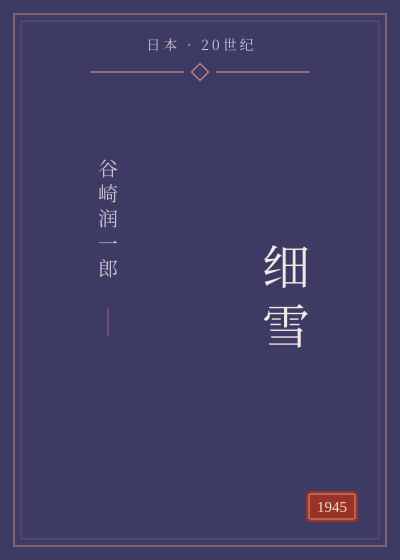

细雪
一、基本信息
| 作者 | 谷崎润一郎 |
|---|---|
| 成书/出版 | 1943—1948年出版（Britannica） Junichiro Tanizaki — Encyclopaedia Britannica（百科全书） |
| 国别/地区 | 日本 |
| 时代 | 现当代 · 20世纪 |
| 体裁 | 长篇小说（家族小说） |
| 语言 | 日语 |

《细雪》四姐妹结构图（主题·结构图）
二、创作背景
Britannica：The Makioka Sisters (1943–48) 列于'important late works'——大阪没落旧家族四姐妹的'婚事'编年（通说）。
背景：1936—1941年——战争阴影下的关西日常生活（通说）。
三、内容脉络
四姐妹：鹤子（长姐·继承家业）、幸子（二姐·叙述中心）、雪子（三妹·'最美的'——'嫁不出去'）、妙子（四妹·最叛逆）——'雪子相亲'为全书主线（通说）。
日常：大阪四季（樱花、萤火虫、赏雪）、蜉蝣目昆虫收集、关西上方文化（通说）。
结局：雪子终于相亲成功——'远嫁'东京，小说以火车窗外风景收束（通说待核）。
四、主要人物表
| 人物 | 身份 | 说明 |
|---|---|---|
| 鹤子 | 长姐 | '继承'正家 |
| 幸子 | 二姐 | '叙事中心'——雪子的'监护人' |
| 雪子 | 三妹 | '最美'——'相亲'的焦点（通说） |
| 妙子 | 四妹 | '叛逆'——人偶师/摄影师（通说） |
五、主题与艺术特点
- '日常'的史诗：无重大事件的四姐妹生活（通说）。
- '旧'与'新'：大阪旧家族在现代化中的衰微（通说）。
- '相亲'作为'命运'：雪子之美与'嫁不出去'的悖论（通说）。
- 艺术特点：四季意象、上方文化（关西腔）、'细雪'的轻盈。
六、影响与评论
- Britannica（Tanizaki 条）：The Makioka Sisters (1943–48) 列于 important late works。
Junichiro Tanizaki — Encyclopaedia Britannica（百科全书） - 中译：于雷译《细雪》（人民文学出版社，通说待核）。
Junichiro Tanizaki — Encyclopaedia Britannica（百科全书）
七、阅读建议
难点
- 无重大事件——'日常'就是主题。
- 关西方言与上方文化（茶道、人偶、和服）——注释。
- 于雷译《细雪》（人民文学出版社，通说待核）。
- 英译：Edward Seidensticker（通说待核）。
通读 → 精读赏花段与雪子相亲段 → 对照《源氏物语》的'女性群像'。
八、待核实
- 连载与单行本细节（1943年删节版、1948—49年全本，通称）待核。
- 于雷译本信息待核。
- Edward Seidensticker 英译（Knopf，通说待核）待核。
本页主要来源
谷崎润一郎的其他收录作品：细雪